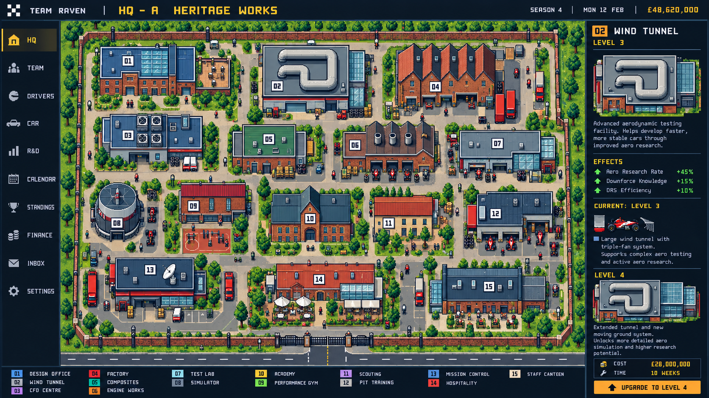
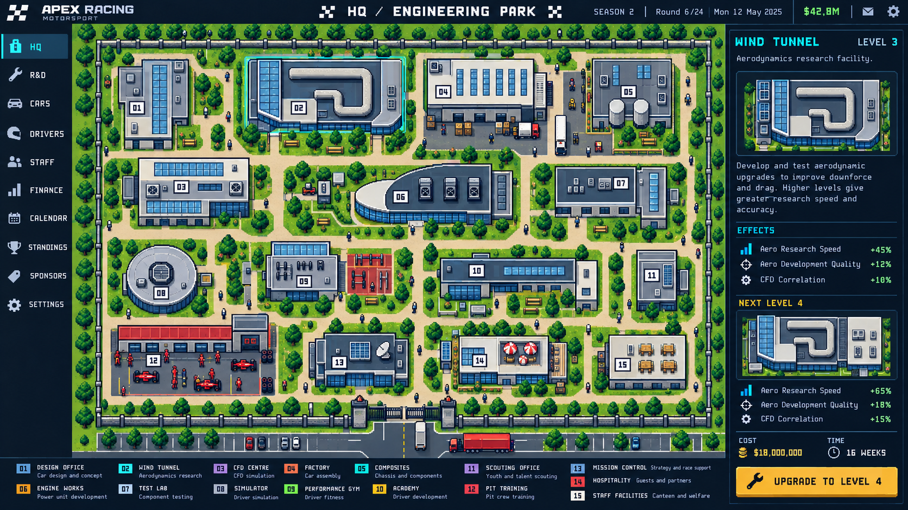
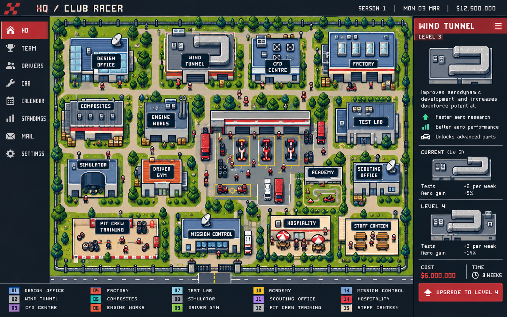

A · Heritage Works
Brick workshops, pitched factory roofs, working courts and modern extensions.

Compare architecture, campus atmosphere and interface. Static concept images; all values are illustrative.
Brick workshops, pitched factory roofs, working courts and modern extensions.

Contemporary research wings, coordinated blue glass and a cooler technical interface.

Bolder outlines, racing colours and larger crew activity sprites.

All three still lean toward regular rows. Final review must verify 15 facility anchors, natural circulation, equal land area across teams and five structural variants per building. Generated images are not production sprite sheets.